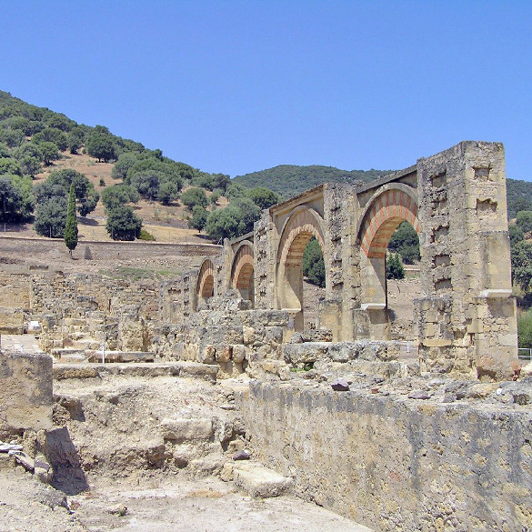

Medina Azahara

Medina Azahara, la fastuosa y misteriosa ciudad que Abd-al Rahman III mandó construir a los pies de Sierra Morena, a ocho kilómetros de Córdoba capital, encierra, incluso en su nombre, historias legendarias. La tradición popular afirma que, autoproclamado Abd al-Rahman III califa en el 929 d.C., y tras ocho años de reinado, decidió edificar una ciudad palatina en honor a su favorita, Azahara. Sin embargo, recientes estudios aportan fuertes evidencias de la causa que impulsó al califa a fundar Medina Azahara. Una renovada imagen del recién creado Califato Independiente de Occidente, fuerte y poderoso, uno de los mayores reinos medievales de Europa, se acepta como el origen más probable de la nueva Medina.